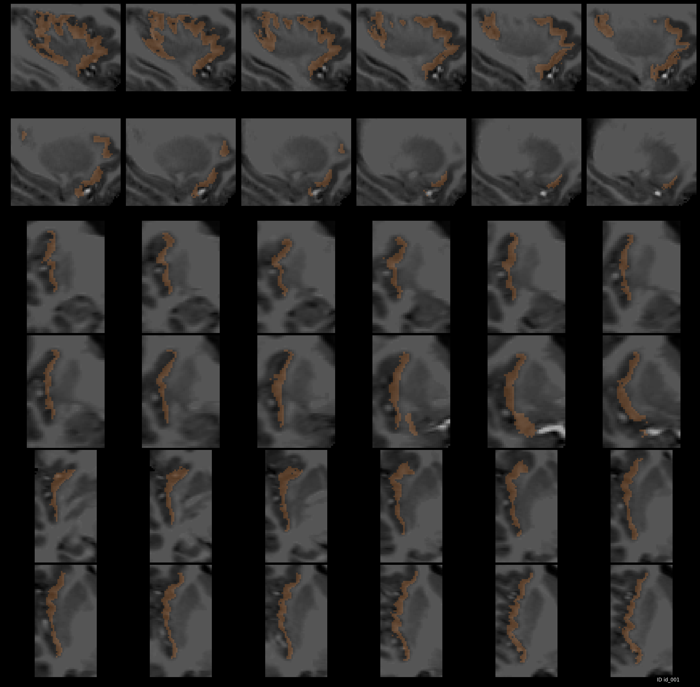

Gallery (filled)¶
Freesufer’s cortical parcellation against the original MRI (note one axis is zoomed-in):

In the second screenshot, we show the use case for a single label (subcortical segmentation, tissue class or cortical ROI) - shown here is hippocampus:

Focusing on multiple subcortical structures:

And you can add as many ROIs as you like:

ROIs could be from anywhere in the MRI (including big cortical labels too!). For example, let’s look at posterior cingulate (label 1023 in Freesurfer ColorLUT) in the left hemi-sphere :

And, how about insula?
You can also combine as many cortical ROIs as you wish and zoom in on them to get every detail you need to judge their accuracy: